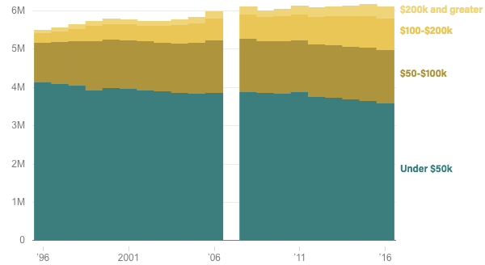

<% t.markdown = require('markdown-it'); %>
<% if (COPY.labels.headline) { %>
<%= t.smarty(COPY.labels.headline) %>
<% } %>
<% if (COPY.labels.subhed) { %>
<%= t.markdown().render(COPY.labels.subhed) %>
<% } %>
aria-label="<%- COPY.labels.screenreader %>"
<% } %>
>
